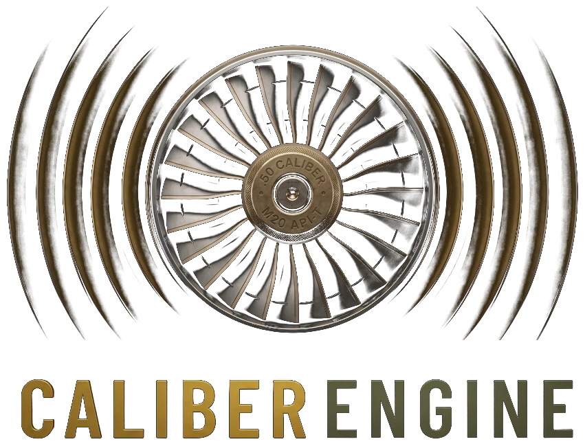

Every key is yours
Each game gets its own profile with its own key bindings. Change any key so it matches the way you've set your game up.
One-handed gaming
Games expect two hands. CaliberEngine gives you a second one: say a command and it presses the key for you. Reload, heal, open the map, jump into a menu — without letting go of the controls you can reach.

Why it helps
Say reload or quickslot one and CaliberEngine sends the key to your game. The keys you'd have to stretch for become words instead.
Leave it always listening and you never press a thing to talk. Prefer push-to-talk? Hold one key while you speak. Your choice.
Say mute to stop it acting on what you say — for a call, a snack, or a chat with the room. Say unmute to carry on. No hands involved.
Teach it where a game's settings tabs are once, then say controls or graphics to jump straight there.
Add your own abbreviations and quick phrases, so a short word can stand in for a longer command — and so words it mishears can be fixed your way.
Show it where your health bar is once, and it calls out when you drop past 75, 50 and 25 percent. It only reads your screen — never game memory.
PC Commands let you say a phrase to open a website, launch a program, or press a key combo — and get a spoken answer back.
Fits your setup
Each game gets its own profile with its own key bindings. Change any key so it matches the way you've set your game up.
CaliberEngine can switch to the right profile when it sees your game start, so there's nothing to click before you play.
It sends normal Windows keyboard input, so it works alongside the mouse, keypad or other controls you already use one-handed.
27 games have command sets checked against their real default keybinds — including World of Warcraft, Elden Ring, Valheim, Starfield and Escape from Tarkov. Every other game can use the general set. See the full list →
Free beta
CaliberEngine is free. Speech recognition runs on your own PC — no account, no internet needed.
Straight talk
Who's behind it
Caliber Media is a one-person studio run by a retired Army veteran who games one-handed. CaliberEngine exists because a keyboard and mouse assume two hands — and they shouldn't have to.